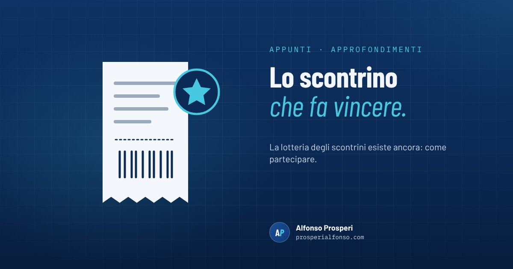

Molti l'hanno dimenticata, ma la lotteria degli scontrini esiste ancora e ogni settimana assegna premi a chi paga con carta, bancomat o app nei negozi. È nata nel 2021 per incentivare i pagamenti elettronici e partecipare è gratuito.
Chi può partecipare
Possono giocare i maggiorenni residenti in Italia, per gli acquisti fatti come privati. Non serve comprare biglietti: partecipano gli scontrini dei normali acquisti.
Come si partecipa
- Ottieni il codice lotteria sul sito ufficiale lotteriadegliscontrini.gov.it, inserendo il codice fiscale. È gratuito e si può salvare sul telefono o stampare.
- Mostralo alla cassa prima di pagare, così il negoziante lo collega allo scontrino.
- Paga con un mezzo elettronico: carta di credito o di debito, prepagata o app di pagamento. In contanti non vale.
Ogni euro speso dà diritto a biglietti virtuali, fino a un massimo per ogni scontrino: più spendi, più biglietti ottieni, ma serve almeno 1 euro di spesa.
Cosa non vale
- gli acquisti online;
- gli acquisti per lavoro, con partita IVA;
- gli acquisti in cui chiedi di inserire il codice fiscale nello scontrino per la detrazione, per esempio in farmacia.
Premi e vincite
Ci sono estrazioni settimanali, con premi da 25.000 euro, e un'estrazione annuale con un premio molto più alto. Non devi controllare a mano: se vinci, ricevi una comunicazione. Puoi anche entrare nell'area riservata del sito con SPID o CIE per vedere i tuoi scontrini e i biglietti accumulati.
Da tempo si parla anche di una versione "istantanea", con vincite al momento dell'acquisto: per sapere se è attiva e per le regole sempre aggiornate, controlla il sito ufficiale.